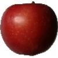
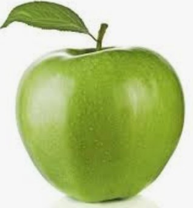
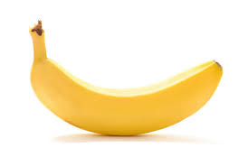
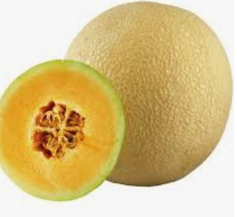
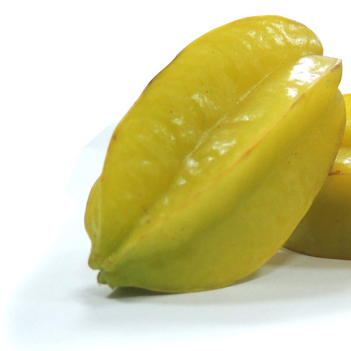
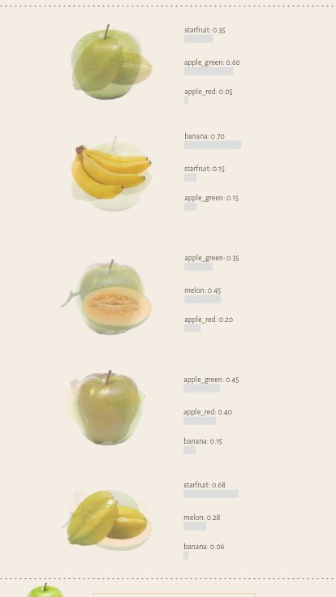
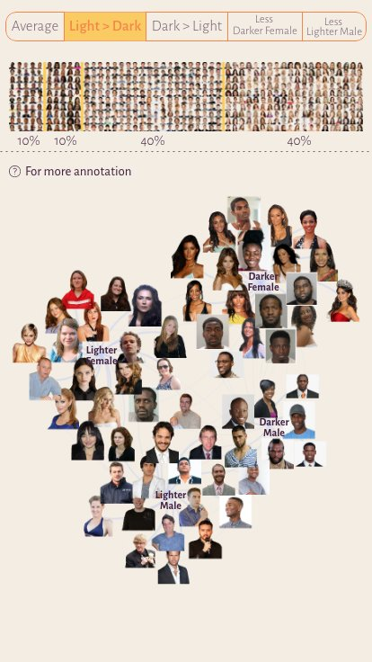

用传播设计打开卷积神经网络这个黑箱。 Opening the black box of the convolutional neural network through communication design.
算法正在替我们做越来越多的决定——推荐、信贷、招聘、司法风险评估。但模型像一个黑箱：我们既看不懂它如何判断，也无从质疑。 Algorithms increasingly decide for us — recommendations, credit, hiring, judicial risk. Yet the models stay opaque: we can neither read how they judge nor question them.
An AI recruiting tool learned to penalize résumés that mentioned women.
Face recognition fails far more often for darker-skinned people than lighter.
传播设计者的角色，不是把技术变简单，而是把它翻译成大众能用集体经验去理解、去批判的形式。 The communication designer's role is not to dumb the technology down, but to translate it into a form the public can grasp — and criticize — through shared, everyday experience.
我把自己当成一个刚入门的业余爱好者去学卷积神经网络：从理论文献，到在线科普视频，再到亲手训练并运行模型。 I approached the convolutional neural network the way an amateur would — from theory, to online explainers, to actually training and running the models myself.
把机器学习当成「田野」来做实验——固定其他条件，只微调输入的训练数据，观察输出，反推模型的「性格」。 Treat machine learning as fieldwork: hold everything else constant, vary only the training data, and read the model's character from what it gets wrong.





红苹果、青苹果、香蕉、哈密瓜、杨桃；训练量从每种 50 张到 1000 张。 Five fruits; the only variable is dataset size — 50 to 1,000 images each.
它把这颗青苹果同时认成 starfruit (35%)、banana (30%)、melon (20%)，正确答案 apple_green 只拿到 15%，排第四。 Starved of data, the model spreads its guesses — starfruit 35%, banana 30%, melon 20% — and ranks the correct apple_green just fourth at 15%.
多 50 张训练图，机器反而对青苹果更自信地认错——starfruit 拿走 90%，apple_green 跌到 0。更多经验不必然带来更好的判断。 Doubling the training set flips green apple to zero. The model is now 90% sure it's a starfruit — confidently wrong. More experience isn't automatically better judgment.
青苹果重新被认对（70%）。可同一训练量下，melon 在这里自己跌进坑：75% 的哈密瓜被认成 banana，正确率只剩 5%。每种水果各有各的"难关"。 Green apple recovers to 70%. But at the same training level, melon hits its own crisis — 75% of melons get called bananas, only 5% correctly recognized. Every fruit has its breaking point.
训练量满格时，每种水果都收敛到唯一且正确的答案。机器的视觉从混沌走向聚焦。 At full capacity each fruit converges to a single correct answer. The machine's vision moves from chaos to focus.
4 个类别（深/浅肤色 × 男/女）× 5 种训练集结构；模型为 ImageNet 预训练的 VGG16。 Four groups (darker/lighter × female/male) × five training compositions; an ImageNet-pretrained VGG16.
识别率全在 84–89%，证明模型本身没问题。 Balanced data → 84–89% across all four. The model itself is fine.
把哪一边的训练样本压低，哪一边就开始被认错。 Starve one side of the training set and its recall collapses.
稀缺到极致的那一组（如深肤色女），被牺牲得最彻底。 The scarcest group (e.g. darker female at 7%) is sacrificed hardest.
所谓算法偏见，不是机器学坏了，而是社会既有的偏见被代码放大了。 Algorithmic bias isn't the machine going wrong — it's society's existing bias, amplified by code.
定位为移动端的轻科普网站。信息分层：顶层极简，底层复杂——用户点击或滑动，才进入更深的内容。 A mobile-first science site. Information is layered: a simple top layer, a complex layer underneath — reached only when the user taps or swipes in.


最大的收获是理解了：「机器学习」不是机器自己学会了什么，而是人用代码和样本把它训练出来的。所谓算法偏见，是社会刻板印象被程序放大的结果。 My biggest takeaway: machine learning isn't the machine teaching itself — humans train it with code and samples. Algorithmic bias is a social stereotype, magnified by a program.
一个诚实的反思：研究越深，我越从「小白」悄悄滑向「入门者」而不自知，结果初版可视化对普通人太技术化了。为谁设计，必须被反复校准。 An honest note: the deeper I went, the more I drifted from layperson to insider without noticing — and my first visualizations turned too technical. Who you design for must be re-calibrated, constantly.